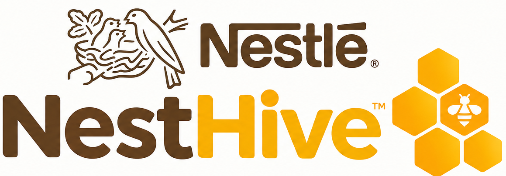
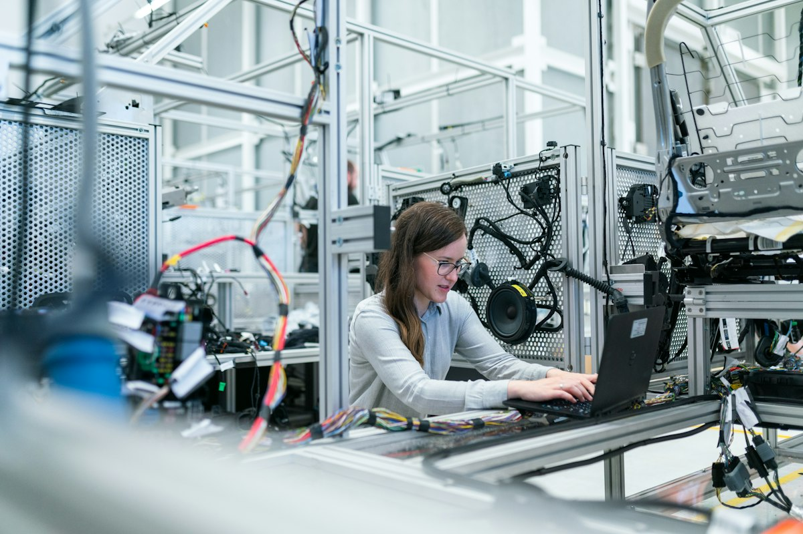

NH
Una sola flota · un solo cerebro · cero desperdicio
Joshua Reinoso (USFQ) · Andrea Verdezoto (ESPOL) · Andrés Fernandez (UTPL)
Criterio · Problemática · 20%
El reto Nestlé, sin maquillaje
Automatizar el flujo de materiales y productos entre producción y almacenamiento — con más productividad, eficiencia y seguridad.
↔️
Doble flujo que no puede fallar
- Producto terminado → líneas → almacenamiento
- Materiales → almacén → empaquetadoras, a tiempo
💸
Costos ocultos
- Paquetes olvidados en el punto de entrega
- Personas desbloqueando en vez de crear valor
 Nestlé Warehouse — el piso que NestHive coordina
Nestlé Warehouse — el piso que NestHive coordina
El cerebro de la colmena
NestHive + Néstor, la reina abeja
IA orquestadora: decide rutas y vehículos, prioriza demandas, informa en vivo y responde al operador.
🧭
Decide
Qué ruta usa cada AGV y qué demanda atiende — asignación y re-ruteo en el mismo cerebro.
📊
Informa
KPIs en vivo: movimientos, paradas evitadas, estado de flota y averías.
💬
Conversacional
Néstor responde intents operativos: flota, baterías, misiones, cuellos de botella, riesgo del turno.
Obreras = AGVs
Reina = Néstor
Nestlé Warehouse · un cerebro
Viabilidad técnica · Integración
WCS ↔ Néstor ↔ WMS / SAP
🏭 WCS
Piso industrial
- PLCs y cinta
- AGVs en misión
- Ejecución física
- Telemetría de posición
👑 NÉSTOR
Cerebro NestHive
- Rutas y vehículos
- Prioridades P1–P10
- Averías y re-ruteo
- KPIs + chat operativo
⇄
órdenes
stock
evento palet
📦 WMS / SAP
Inventario empresarial
- Órdenes EWM
- Stock maestro
- Trazabilidad
- Sin reescribir SAP
📡 Anillo RFID → SAP/WMS: al recoger cada palet, el lector RFID del AGV escanea el tag y actualiza inventario en tiempo real —
≥99,9%exactitud
Estrategia de movimiento · operación real
Mover antes de que la demanda llegue
NestHive se adelanta al stock-out: abastece preventivo con las métricas del centro en vivo.
132 stakt operativo
1.035mov/día
215/131salida / entrada · turno
411techo pallets/turno (+91%)
⚠️
Umbral crítico
Disparo de abastecimiento antes de que el gauge cruce el mínimo operativo.
⏩
Preventivo
Misiones anticipadas en cola — holgura para el matching, menos picos de flota.
🛡️
Degradación segura
Si el ritmo cambia, el sistema vuelve a modo reactivo sin arriesgar la planta.
Flota unificada
4 AGVs · 3 operativos + 1 backup
🛠️
Robustez ante avería (OPS)
- El AGV se detiene y bloquea su tramo
- Los demás re-rutean; pausa si no hay paso
- Reparación 10 s · el backup asume sin perder misiones
 AGV NestHive en el Nestlé Warehouse
AGV NestHive en el Nestlé Warehouse
Demo en vivo · Nestlé Warehouse
NestHive operando ahora
FUENTE→
P 🧩→
cinta 20 s→
R 📦→
morado→
Transporte
- Mapa del Nestlé Warehouse: muros + 139 nodos / 162 aristas
- Cadena paletizaje → Transporte (AGV de exportación)
- Néstor informando y respondiendo en vivo
- Señales 🧩 / 📦 + panel OPS de averías
 Tablero NestHive — KPIs y flota en tiempo real
Tablero NestHive — KPIs y flota en tiempo real
Criterio · Innovación · 15%
Qué innovamos de verdad
🎯
Mission control
Cero puntos bloqueados: cada salida encadena exportación.
👁️
Percepción real
Decisión sobre el grafo vivo del Nestlé Warehouse.
🗣️
Néstor conversacional
Preguntas operativas con datos verificables.
🔌
Protocolo abierto
API/WebSocket — agnóstica de fabricante.
Criterio · Valor para Nestlé · 15%
Cumplimiento del reto — con dato
| Criterio | Cómo lo cumplimos | Métrica de operación |
|---|
| Productividad | Techo de turno y ritmo de línea | 411 pallets/turno (+91%) · takt 132 s |
| Demanda | Movimientos diarios del centro | 1.035 mov/día · 215 / 131 por turno |
| Exactitud | RFID en recogida → SAP/WMS | ≥99,9% |
| Disponibilidad | Backup + re-ruteo ante avería | ≥98% |
| Servicio | Espera controlada en flujo | ≤30 s p95 |
| Seguridad | Muros + percepción + peatones | ISO 3691-4 |
Costo-beneficio
ROI — la inversión de NestHive
$0,76MCAPEX · 4 AGVs
$0,21Mahorro / año
≈3,6años payback
≤3años · 3 turnos
$0,22Mpiloto <1 turno
🚛
Flota objetivo = flota real
4 AGVs (3 + 1 backup) cubren el Nestlé Warehouse: menos CAPEX, menos mantenimiento, misma robustez operativa.
✅
Plataforma validada
Suite de cierre de la plataforma:
118 backend
171 ESPOL
+93 subtests
Descomposición · Recuperación
CAPEX NestHive y cómo se recupera
| Línea CAPEX |
Inversión |
| AGVs — 4 uds × $95k |
$380k |
| Integración WCS / comunicaciones |
$120k |
| Lectores RFID + tags / palet |
$55k |
| Infraestructura (cintas, sensores, señalización) |
$90k |
| Puesta en marcha / licencias |
$70k |
| Contingencia |
$45k |
| TOTAL NestHive · 4 AGVs |
≈ $0,76M |
Inversión completa para operar el Nestlé Warehouse con flota de 4 AGVs (3 + 1 backup).
♻️
Cómo se recupera la inversión
Ahorro ≈ $0,21M/año proviene de:
- Eliminar km de pata vacía (~45%)
- Horas de gente desbloqueando paquetes
- Menos energía por pallet
- Menos mermas por olvidos
Payback = CAPEX / ahorro ≈ 3,6 años → ≤3 con 3 turnos.
Ahorro acumulado vs CAPEX ($0,76M)
Cruce del punto de equilibrio ≈ año 3,6. Escala relativa a $0,84M.
Criterio · Sostenibilidad · 15%
Menos energía · menos desperdicio
Net Zero 2050 · ODS 12 — eficiencia de recursos con números, no con eslóganes.
⚡
Menos energía / pallet
Cada km de pata vacía evitado reduce consumo eléctrico de la flota.
🔋
Menos ciclos de batería
Menos viajes improductivos → más vida útil y menos recargas.
🌱
Cero desperdicio operativo
Sin paquetes olvidados ni entregas perdidas por avería o recarga.
Criterio · Escalabilidad · 15% · Cierre
De un Nestlé Warehouse a la colmena
🗺️
Un centro = un mundo
Layout + flota + ritmo. Otra planta se configura, no se reescribe.
🖥️
Multi-centro
Un tablero. Varias plantas con el mismo motor Néstor.

Operador + Néstor — la colmena bajo control
Cierre
NestHive: una sola flota, un solo cerebro, cero desperdicio. Así opera el Nestlé Warehouse.
Gracias — quedamos listos para sus preguntas.